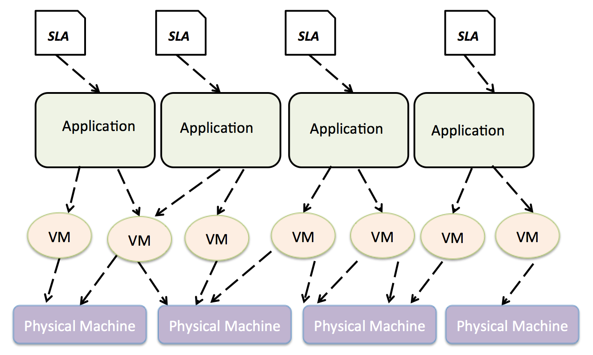
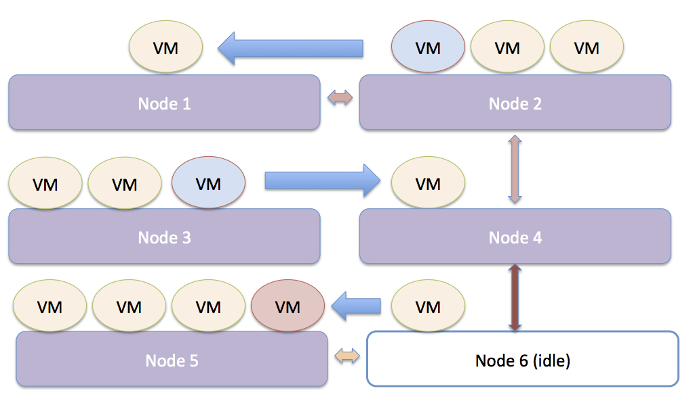

Generic Cloud Platform Multi-objective Optimization Leveraging Models@run.time
29th Symposium On Applied Computing Gyeongju, Korea March 24-28, 2014
Who Are We?
Security Design and Validation Research Group – SERVAL, SnT:- Donia El Kateb: PhD student
- François Fouquet: Research associate
- Grégory Nain: Research associate
- Jorge Augusto Meira: PhD student
- Michel Ackerman: Business Consultant, EBRC
- Yves Le Traon: Professor, Head of the SerVal research group
Context
What is the Cloud?

Computing and software resources that are delivered on demand, as service. (2013, January) A Walk in the Clouds. Cloud Computing, CDW-G Reference Guide.
Cloud Resources
Resources Placement Problem
Cloud Resources Management
Need forResources Placement Strategies:
ScheduleVMs to physical nodes- Virtual Machines
isolation, shutdown unused nodes
heterogeneous Resources:
- Different software versions
- Different VM Management Platforms
- Different physical machines characteristics
Motivation
Abstraction for Elasticity Management
"Cloud elasticity is the ability of the cloud infrastructure to rapidly change the amount of resources allocated to a service in order to meet the actual varying demands on the service while enforcing SLAs." [Ali-Eldin et al.]
Dynamic resources provisioning/deprovisioning as response to:- Increasing Workloads, Incident Response, Changes in SLA requirements
abstraction layerand a reasoning engine to reason about cloud adaptations
Conflicting Objectives in VM Management
Cloud Management
- Cloud management (i.e., VM elastic management) has to deal with
trade-offssuch as cost, quality of service and security - Cloud Management is a
multi-objectiveoptimization problem - Current cloud platforms usually focus on one
dimensional optimization

Motivation
We aim at proposing a framework to configure dynamically a cloud infrastructure according to customers and providers objectives.
The framework has to be embedded with a reasoner to handle trade-offs considering:
- Several
conflictingoptimization axis - Inputs in each axis are
continuouslyevolving - Resources are
heterogeneous
Is the cloud a DAS ?
- Reconfiguration capabilities at runtime, to adjust to unpredictable conditions:
reflection - Capacity of observing their own behavior and analyzing their effectiveness:
introspection - Ability to change their behavior:
intercession
Cloud Architectural Model
Resolution
Resolution Approaches
- Constraint Solving Techniques
- Simulated Annealing
- Tabu Search
-
MOEA (Multi-objective Evolutionary Algorithm)
CMOP (Cloud Multi-Objective Optimization Problem) Modeling
Models@run.time for Cloud abstraction:
- Provide high level
abstraction - Extend the reasoning to the system while it is in a
running state Reevaluatecontinuously requirements satisfaction while the system isevolving
CMOP Modeling
- A physical machine → Kevoree Infrastructure Node
- A virtual machine → Kevoree Child Node
- A component → Software Service
Problem Inputs
- A set of requirements that we must satisfy over time:
objectives(Static or dynamic) - A cloud configuration:
a model - A set of actions to update a configuration:
operators
CMOP Problem Domain Inputs
We define CMOP by the following triplet (I,F,CO) such that:
- I denotes a cloud infrastructure model
- F is a vector of objective functions F(X) = ( f1(x),f2(x),...,fn(X)), that have to be minimized
- CO denote possible cloud configurations: co = VM1(c1,c2,c3) denotes a configuration with a single virtual machine VM1 hosting 3 components c1,c2,c3.
Operators Description
| Operators | Description |
|---|---|
| AddComponent(c,A) | Adds a component c in the the virtual machine A |
| RemoveComponent(c,A) | Removes a component c in the virtual machine A |
| MoveComponent(c,A,B) | Moves a component c from the virtual machine A to the virtual machine B |
Fitness Functions
f1(x)= Cost(x)calculated based on Amazon pricing model (http://aws.amazon.com/ec2/pricing/)f2(x)=Security(x)gives a score of a security level of an infrastructuref3(x)=Completeness(x)provides a score of the number of software components that have been placedf4(x)=Overload(x)provides a score of a cloud infrastructure performance- ......
CMOP Workflow
Overall approach
Validation
Validation Scenario
Validation of our approach is related to the scenarios of interest for EBRC provider in Luxembourg and aims at:
- Providing an approach to reconfigure a cloud platform according to evolving customer
optimization objectives -
Reducingdata center energy consumption
Validation Scenario
- A database to store items
- A load balancer
- A database for payment
- A database to manage users
- A web Front-end
Experimental Setup
- 3 ARM based Infrastructure Node (1 Virtual Machine abstracted as child node where each node is 1GHz)
- 2 Xeon based Infrastructure Node (8 Virtual Machine abstracted as child node where each node is 1GHz)
Experimental Setup
| Component | Required CPU (GHz) | Security Level |
|---|---|---|
| ItemDB | 1.2 | 2 |
| LoadBalancer | 0.4 | 0 |
| PaymentDB | 0.6 | 4 |
| UserDB | 0.4 | 3 |
| WebFrontend | 1.2 | 1 |
Validation Objectives
We aim at investigating the Feasibility and the Scalabilityof our approach:
- Comparing mono-objective vs. multi-objective optimization
- Comparing multi-objective algorithms in terms of objectives satisfaction and scalability
Multi-objective optimization results
Fitness Functions Scores (mono-objective versus multi-objective)
| Mono-objective,600 ms | CMOP-epsilon,1700 ms | |
|---|---|---|
| Completeness | 0 | 0.0 |
| Consumption | 100.0 | 43.47 |
| Overload | 24.0 | 0.0 |
| Security | 70.0 | 0.0 |
| SLAPerformance | 0.0 | 0.0 |
Multi-objective approach scalability
How the quality of results is impacted by thesize of the search domain?
We scalethe infrastructure from 5 infrastructure hosts (scale 1) to 60 infrastructure hosts (scale 12) and compare:
- NSGA II (1000 generations)
- NSGA II with epsilon-dominance (1000 generations)
- Random generation (500 generations)
Multi-objective algorithms versus Random (Scale 4)
Algorithms Comparison for different scales
| Scale | Random | CMOP | CMOP-epsilon |
|---|---|---|---|
| 1 | 18 | 6.4 | 5.21 |
| 3 | 16 | 5.9 | 6 |
| 4 | 14.7 | 7.9 | 8.9 |
| 5 | 16 | 7.1 | 8.8 |
| 8 | 14.9 | 6.69 | 9.4 |
| 12 | 14 | 8.3 | 11 |
Threats to Validity
Internal Validity:- Number of generations at the initial setup
- Stopping criterion
- Fitness functions models
- Selected optimization axis
- Selected resolution strategy
Conclusion
Conclusion
- Effectiveness of the optimization at the level of
architectural models - Effectiveness of
search-based approachesto resolve a cloud multi-objective optimization problem - Implementation using Kevoree as a
Models@run.timeplatform
Future Work
- Detection of the absence of improvements as a
stopping criterion - Comparison with other
resolution strategies - Usage of
Hyper-heuristicsto improve the search performance